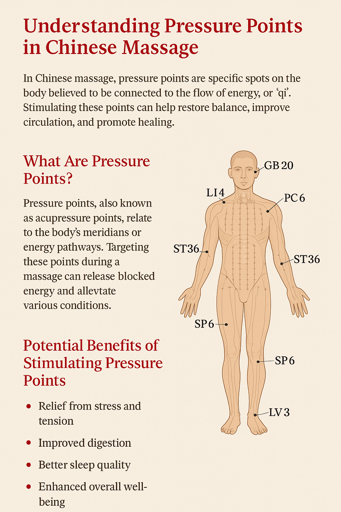

Understanding Pressure Points
Pressure points — known as xué wèi (穴位) in Traditional Chinese Medicine — are specific areas on the body believed to be connected to energy channels called meridians. Stimulating these points can promote balance, reduce pain, and improve circulation.
